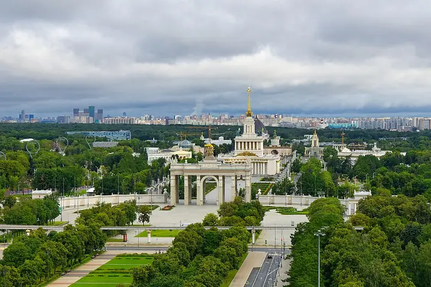

Подборку собрали 20 октября, прошедшие события скрыты. Свежая афиша — на главной

Фото: Alexxx1979, CC BY-SA 4.0 · Wikimedia Commons
Парк · СВАО
ВДНХ
Фонтан «Дружба народов», павильоны и аллеи — гулять можно часами.
- ₽ · до 1 500 ₽ на человека
- в 2 планах
- 2 события в афише
Позвать сюда: ВДНХОткрыть в каталоге: ВДНХМаршрут до места: ВДНХ
Адрес и детали
- Адрес
- пр. Мира, 119
Открыть на Яндекс Картах (в новой вкладке) - Метро
- м. ВДНХ
- Округ
- Северо-Восток (СВАО)
- Цена
- до 1 500 ₽ на человека
Планы с этим местом 2
- Музей космонавтики · Музей · м. ВДНХ
- 16 минут пешкомВДНХ · Парк
Настоящие спускаемые аппараты, скафандры и макет станции «Мир» в музее под монументом, а потом прогулка по ВДНХ к фонтану «Дружба народов».
Открыть план: Космос и ВДНХПозвать сюда: Космос и ВДНХ
Фото: Музей космонавтики, CC0 · Wikimedia Commons
- Москвариум · Океанариум · м. ВДНХ
- 16 минут пешкомВДНХ · Парк
Акулы и подводный тоннель, а потом прогулка по аллеям ВДНХ к фонтану «Дружба народов».
Открыть план: Океанариум и фонтаны ВДНХПозвать сюда: Океанариум и фонтаны ВДНХ
Фото: Dmitry Ivanov., CC BY-SA 4.0 · Wikimedia Commons


Афиша площадки 2
ВДНХ, павильон № 1 «Центральный» · м. ВДНХ · 0+
Около 200 работ о том, как театр и живопись говорят одним языком: Репин, Брюллов, Суриков, Кустодиев и сценические костюмы. Центральный павильон ВДНХ.
Подробнее: Искусство сцены. Академическая живописьПозвать сюда: Искусство сцены. Академическая живописьБилеты : Искусство сцены. Академическая живопись (страница с билетами, откроется в новой вкладке)
Фото: Alexxx1979, CC BY-SA 4.0 · Wikimedia Commons
Музей Востока на ВДНХ (павильон № 13) · м. ВДНХ · 0+
Около 250 работ Рериха — от древнерусских мотивов до гималайской серии — плюс тибетские танки и буддийская бронза. Большая выставка в павильоне ВДНХ.
Подробнее: Николай Рерих. Ковчег будущегоПозвать сюда: Николай Рерих. Ковчег будущегоБилеты : Николай Рерих. Ковчег будущего (страница с билетами, откроется в новой вкладке)
Фото: Alexxx1979, CC BY-SA 4.0 · Wikimedia Commons

Похожие рядом


Что ещё рядом


Как позвать
- Выбери план, место или событие — в карточке адрес, цены и маршрут в Яндекс Картах.
- Нажми «Позвать сюда» — соберётся приглашение-игра для свидания или голосование для компании.
- Отправь ссылку в любой мессенджер: тебе ответят, а компания отметит, куда и когда может. Бесплатно и без регистрации.